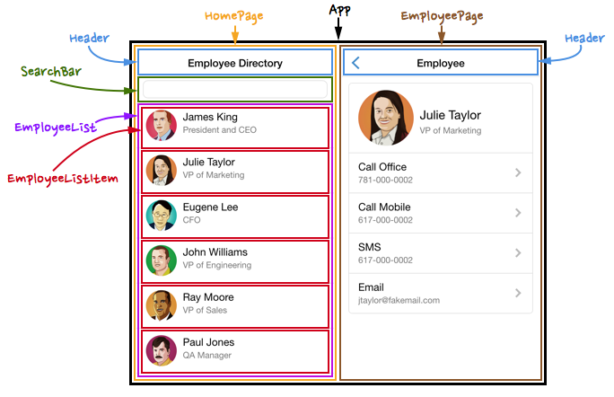

Chapter 15 Introduzione a React
Questo capitolo introduce la libreria JavaScript React. React e’ “una JavaScript library per costruire user interfaces” sviluppata da Facebook (anche se e’ rilasciata come open-source software). Al suo core, React permette di generare dinamicamente e interagire con il DOM, in modo simile a quanto potresti fare con jQuery. Tuttavia, React e’ stato creato per rendere molto piu’ facile definire e manipolare molte parti diverse del DOM, e farlo rapidamente (in termini di velocita’ del computer). Lo fa permettendoti di dichiarare una web app in termini di components diversi (pensa a “things” o “parts” di una web page) che possono essere gestiti in modo indipendente—questo ti permette di progettare e implementare web apps a un livello piu’ alto di astrazione. Inoltre, i components sono di solito associati a un set di data, e React “re-renderizza” automaticamente (mostra) il component aggiornato quando i data cambiano—in modo computazionalmente efficiente.
React e’ attualmente il “framework” piu’ popolare per costruire web applications su larga scala (i principali concorrenti sono Angular e Vue.js, anche se esistono molti framework simili). Dai un’occhiata a TodoMVC per un esempio della stessa application in ciascuno!). Questo significa che React e’ molto ben documentato; esistono centinaia di tutorial, video ed esempi per costruire applicazioni React (di cui questo capitolo e’ solo un altro). Alcune risorse generali sono incluse alla fine del capitolo, ma in generale consigliamo di partire dalla documentazione ufficiale, in particolare dal set di main concepts. Nota che questo libro segue piu’ o meno l’approccio usato dal Intro to React Tutorial di Facebook.
React ha attraversato diverse major versions nella sua breve vita. Inoltre: lo “stile” con cui React viene scritto e’ evoluto nel tempo man mano che nuove feature venivano aggiunte sia alla libreria React che al linguaggio JavaScript. Questo libro introduce e enfatizza un approccio che privilegia chiarezza dei concetti e leggibilita’ del codice, piuttosto che concisione della sintassi o uso di opzioni avanzate, cercando al contempo di riflettere le pratiche attuali nello sviluppo React.
React e’ sviluppato e mantenuto da Facebook (Meta). Facebook come azienda ha una lunga storia di violating the Fair Housing Act, leaking or selling personal private data, allowing the spread of misinformation, enabling genocide e in generale scegliere il profitto rispetto alla sicurezza. Potresti comprensibilmente preoccuparti del fatto che imparare e usare React supporti implicitamente questa azienda e i suoi comportamenti. Ogni volta che adotti un tool o una library software, vale la pena investigare chi l’ha creata (e perche’) e come questo possa influire sulla tua disponibilita’ a usarla come dependency.
15.1 Preparazione: React e Vite
React e’ una JavaScript library simile a quelle discusse nei capitoli precedenti—carichi la library e poi puoi chiamarne i methods. Tuttavia, React fa uso di molta sintassi JavaScript avanzata e custom chiamata JSX (descritta sotto), oltre a un uso esteso di ES6 Modules. Quindi, in pratica, sviluppare app React richiede usare diversi development tools—il semplice setup iniziale e’ uno degli ostacoli principali nell’imparare React!
La maggior parte delle app React e’ strutturata usando un production framework. Questi framework raccolgono e scaffoldano le diverse dependency libraries e build tools necessari per avviare un project React. Esistono molti framework di questo tipo, ognuno con le proprie opinioni e restrizioni su come strutturare le app React. Per questo corso userai Vite come build tool framework. Vite (pronunciato “veet”) fornisce un ambiente di build rapido e semplice che ti permette di scrivere facilmente React “puro” senza dover imparare altre quirks del framework. Una volta che hai una comprensione di base di React, puoi esplorare e imparare facilmente altri framework e tools.
Facebook in passato forniva un tool ufficiale di scaffolding chiamato Create React App, ma quel sistema e’ stato abbandonato (vedi ad es. questo commento di un developer per un po’ di contesto). Le versioni piu’ vecchie di questo testo e corso usavano Create React App, quindi potresti vedere ancora alcuni riferimenti vecchi!
Vite e’ un’applicazione da command line che genera scaffolding (“starter code”) per una React application, e fornisce anche script built-in per eseguire, testare e deployare il codice. Puoi usare Vite per creare una nuova React app eseguendo il programma, specificando il nome della cartella dove vuoi creare l’app, e indicando che Vite deve scaffoldare una React application (Vite supporta diversi web frameworks). Per esempio, il comando qui sotto creera’ una nuova cartella chiamata my-app che contiene tutto il codice e i tool necessari per creare ed eseguire una React app:
# Create a new React app project in a new `my-app` directory
# Hit 'y' when prompted!!
npm create vite@latest my-app -- --template react
# Change into new project directory to run further commands
cd my-app
# Install the build dependencies Vite has scaffolded
npm installIl comando
npm create <package>e’ in realta’ una scorciatoia per eseguirenpx create-<package>—potresti scriverenpx create-vite@latest, anche se il comandocreatee’ piu’ convenzionale. Non serve installare i packagevite(ocreate-vite) globalmente.Se specifichi la directory corrente (
.) come nome della target folder (dove “my-app” e’ nell’esempio sopra), Vite creera’ una nuova React app nella cartella corrente! Questo e’ utile quando vuoi creare una React app dentro un repository GitHub gia’ clonato.L’argomento
--template reactspecifica di usare il template “starter” React. Vite supporta molti community-defined templates. Il--extra prima di quell’argomento aiutanpma capire quale argomento nominato viene passato.
Eseguire il Development Server
Dopo aver creato una React app, puoi usare Vite per avviare un development webserver eseguendo lo script dev:
# Assicurati di essere nella directory del project
cd path/to/project
# Esegui lo script del development server
npm run devQuesto avviera’ il webserver. Dovrai aprire un browser per vedere il contenuto servito, di default su http://localhost:5173/. Questo development webserver eseguira’ automaticamente quanto segue ogni volta che cambi il source code:
Transpilera’ il codice React in JavaScript puro che puo’ essere eseguito nel web browser (vedi JSX sotto).
Gestira’ e referenziera’ diversi JavaScript modules e dependencies, incluse node modules esterne.
Mostrera’ errors e warnings nella finestra del browser—la maggior parte degli errori apparira’ nella developer console, mentre gli errori fatali (per esempio, syntax errors che mandano in crash l’intera app) saranno mostrati come una pagina di errore. Nota che i Chrome React Developer Tools forniranno ulteriori opzioni di errore e debugging.
Ricarichera’ automaticamente la pagina ogni volta che cambi il source code! (Anche se spesso e’ bene fare un refresh manuale quando testi, giusto per essere sicuri).
Per fermare il server, premi ctrl-c nella command line.
Struttura del Progetto
Una React app appena creata usando il template react di Vite conterra’ diversi file, tra cui i seguenti:
Il file
index.htmle’ la home page della tua application. Se guardi questo file, puoi vedere che contiene quasi nessun contenuto HTML—solo il<head>, il<body>e un singolo<div id="root">. Questo perche’ l’intera app sara’ definita usando codice React JavaScript; questo contenuto verra’ poi iniettato in quell’elemento#root. _Tutto il contenuto della pagina sara’ definito come JavaScript components—creerai l’intera pagina nei file JavaScript. Quindi in pratica, raramente modifichi il fileindex.html(oltre a cambiare metadata come il<title>e la favicon).Il file
index.htmlcarica anche uno script/src/main.jsx. L’estensione.jsxrappresenta codice JSX (vedi sotto); i project Vite chiamano convenzionalmente questo filemain.jsxinvece diindex.js. Tutti i file JavaScript si trovano nella cartellasrc/Il file
index.htmlpuo’ includere anche elementi<link>nel<head>per caricare CSS. Tuttavia, e’ molto preferibile importare qualsiasi contenuto CSS tramite codice JavaScript (anche se Vite funziona con entrambi gli approcci). Tutti i file CSS sono posizionati nella cartellasrc/.La cartella
src/contiene il source code della tua React app. L’app viene avviata dallo scriptmain.jsx, ma questo script importa e usa altri JavaScript modules (come lo scriptApp.jsxfornito, che definisce il modulo “App”). In generale, scriverai React apps implementando components in uno o piu’ moduli (per esempio,App.jsx,AboutPage.jsx), che saranno poi importati e usati dal filemain.jsx. Vedi la sezione Components sotto per i dettagli.Quando avvii una nuova React app, consiglio di cancellare tutto il contenuto di
main.jsxeApp.jsxper partire da zero.I file
src/index.cssesrc/App.csssono entrambi file CSS usati per stilare rispettivamente l’intera pagina e il singolo component “App”. Non ti servono necessariamente entrambi i file; consiglio di tenere solo un fileindex.cssmentre inizi. Nota che i file CSS sono importati dall’interno dei file JavaScript (con ad es.import './index.css'nel filesrc/main.jsx). Questo perche’ il build system di Vite sa come caricare i file CSS, quindi puoi “includerli” tramite JavaScript invece di doverli linkare in HTML.Se vuoi caricare uno stylesheet esterno, come Bootstrap o Font-Awesome, puoi ancora farlo modificando il file
public/index.html—ma e’ meglio installarli come moduli e importarli tramite JavaScript. Vedi la documentazione per Adding Bootstrap per un esempio.- Ricorda che tutto il CSS e’ globale—le regole specificate in qualsiasi file
.csssi applicheranno all’intera app (cioe’, le regole diApp.csssi applicheranno anche a components diversi da quelli inApp.js). Il CSS e’ spezzato in piu’ file per cercare di mantenere le regole organizzate. In alternativa, puoi mettere tutte le regole CSS in un singolo file, usando uno schema di naming o altre tecniche per mantenerle organizzate. Se ti interessano modi per evitare che il CSS si applichi globalmente, guarda l’uso di CSS in JS.
- Ricorda che tutto il CSS e’ globale—le regole specificate in qualsiasi file
La cartella
src/assetspuo’ essere usata per salvare media assets che vengono importati direttamente; consiglio di eliminarla e di salvare invece gli assets nella cartellapublic. Vedi la guida agli assets di Vite per i dettagli.La cartella
public/e’ dove metti gli assets che vuoi rendere disponibili nella pagina ma che non sono caricati e compilati tramite JavaScript (cioe’, non sono “source code”). Per esempio, qui potresti mettere una cartellaimg/per contenere immagini da mostrare. La cartellapublic/e’ trattata come la “root” della webpage; un file trovato inpublic/img/picture.jpgsarebbe referenziato nel DOM comeimg/picture.jpg—usando un path relativo alla cartellapublic/. Vedi la guida agli assets di Vite per i dettagli.In alternativa puoi mettere gli assets nella cartella
src/assets, e poiimportarli nel JavaScript (trattando quelle immagini come “source code”). Non lo consiglio quando inizi; e’ piu’ semplice mettere le immagini nella cartellapubliced eliminare la cartellasrc/assets.I due file di config
eslint.config.jsonevite.config.jsincludono informazioni di configurazione per eslint (per gli styling checks) e per Vite rispettivamente. Non devi modificare nessuno dei due, ma non eliminarli!
In generale, lavorerai soprattutto con i file .jsx e .css nella cartella src/ mentre sviluppi una React app.
15.2 JSX
Al suo core, React e’ semplicemente una library per creare e renderizzare il DOM—ti permette di dichiarare nuovi elementi DOM (per esempio, creare un nuovo <h1>) e poi aggiungere quell’elemento alla webpage. Questo e’ simile al processo che potresti fare con il DOM o con la library jQuery:
//Crea e renderizza un nuovo elemento `<h1>` usando metodi DOM
const element = document.createElement('hi'); //crea l'elemento
element.id = 'hello'; //specifica gli attributes
element.classList.add('my-class');
element.textContent = 'Ciao Mondo!'; //specifica il contenuto
document.getElementById('root').appendChild(element);La library React fornisce un set di functions che fanno un lavoro simile:
//Importa le functions richieste dalle libraries React
import React from 'react';
import ReactDOM from 'react-dom/client';
//Crea un nuovo elemento `<h1>` usando metodi React. Questa function prende
//argomenti che indicano cosa dovrebbe essere l'elemento
const msgElem = React.createElement(
//tag html
'h1',
//object di attributes
{ id: 'hello', className: 'myClass' },
//contenuto
'Ciao Mondo!'
);
//Crea una "React root" dall'elemento `#root`
const root = ReactDOM.createRoot(document.getElementById('root'));
//renderizza l'elemento React in quel root
root.render(element)La function React.createElement() di React ti permette di creare un elemento (un “React element”, non un elemento DOM puro—sono diversi!) specificando il tipo/tag, il contenuto e un object che mappa i nomi degli attribute ai values—tutto in una singola riga. La function ReactDOM.createRoot() crea un contesto in cui un React element puo’ essere renderizzato (mostrato a schermo)—di solito posizionandolo nel div#root della pagina. Il metodo render() del root prende un React element specifico e lo inserisce come contenuto figlio dell’elemento root. Nota che la function root.render() sostituisce il contenuto dell’elemento DOM root—e’ un’operazione di “replace”, non di “append”.
- Nota che l’attribute
classe’ specificato con la propertyclassName. Questo perche’classe’ una keyword riservata in JavaScript (dichiara una class).
La function createRoot() e’ stata introdotta con React v18 (March 2022). Le versioni precedenti di React usavano direttamente ReactDOM.render() invece di creare esplicitamente un root context. Usare ReactDOM.render() fara’ funzionare la tua app come se usasse React v17, impedendo ad alcune feature avanzate di funzionare.
La function React.createElement() e’ verbosa e scomoda da digitare, soprattutto se devi definire molti elementi DOM (e in React definisci l’intera application in JavaScript!). Quindi React ti permette di creare e definire elementi usando JSX. JSX e’ una syntax extension di JavaScript: fornisce un nuovo modo di scrivere il linguaggio—in particolare, la possibilita’ di scrivere tag HTML nudi (finalmente!):
//Crea un nuovo elemento `<h1>` usando la sintassi JSX
const element = <h1 id="hello" className="myClass">Ciao Mondo</h1>;
//Crea una "React root" dall'elemento `#root`
//poi renderizza l'elemento React in quel root
const root = ReactDOM.createRoot(document.getElementById('root'));
root.render(element)Il value assegnato alla variable element non e’ una String (non ha virgolette attorno). Invece e’ uno syntactical shortcut per chiamare React.createElement()—la sintassi simile a HTML puo’ essere tradotta automaticamente nel JavaScript reale della method call, permettendoti di scrivere una versione piu’ semplice.
Nota che c’e’ ancora un punto e virgola (
;) alla fine della prima riga. Non stai davvero scrivendo HTML, ma definendo un value JavaScript usando una sintassi che sembra HTML!JSX puo’ essere usato per definire elementi annidati; non sei limitato a un solo elemento:
//JSX puo' definire elementi annidati const header = ( <header className="banner"> <h1>Ciao mondo!</h1> </header> );E’ molto comune mettere gli elementi su righe separate, come se stessi scrivendo HTML direttamente. Se lo fai, devi racchiudere l’intera espressione JSX tra parentesi
()per dire all’interpreter che il line break non implica un punto e virgola!Nota che, come in XML, la sintassi JSX richiede che tutti gli elementi siano chiusi; quindi devi usare uno slash di chiusura alla fine degli elementi vuoti:
//Gli elementi JSX devono essere chiusi const picture = <img src="my_picture.png" alt="a picture" />
Dato che JSX non e’ JavaScript valido (non puoi includere HTML nudo normalmente), devi “tradurre” JSX in vero JavaScript affinche’ il browser possa capirlo ed eseguirlo. Questo processo si chiama transpiling e di solito e’ eseguito da un programma compiler chiamato Babel. Babel e’ un altro pezzo della toolchain usata per creare React applications; tuttavia, tutti i dettagli sul transpiling con Babel sono gestiti automaticamente dallo scaffolding di Create React App. “Transpile with Babel” e’ uno dei passaggi eseguiti da Webpack, che e’ incluso ed eseguito dagli script forniti da Create React App (whew!).
- Si’, concatenare tool in questo modo e’ come funziona il modern web development.
In breve: scrivi codice JSX, e quando esegui la tua app con Create React App viene trasformato in normale JavaScript che il browser puo’ capire davvero.
Espressioni Inline
JSX ti permette di includere espressioni JavaScript (come variables a cui vuoi riferirti) direttamente dentro la sintassi tipo HTML. Lo fai mettendo l’espressione dentro le parentesi graffe ({}):
const message = "Ciao mondo!";
const element = <h1>{message}</h1>;Quando l’elemento viene renderizzato, l’espressione e le parentesi graffe saranno sostituite dal value dell’espressione. Quindi il JSX sopra verrebbe renderizzato come HTML: <h1>Ciao Mondo</h1>.
Puoi mettere qualsiasi espressione dentro {}—cioe’ qualsiasi codice JavaScript che risolve a un singolo value (pensa: qualsiasi cosa che potresti assegnare a una variable). Questo puo’ includere operazioni matematiche, function calls, ternary expressions, o anche values di anonymous functions (vedi il prossimo capitolo per esempi):
//Includere una inline expression in JSX. Le espressioni possono essere mescolate direttamente
//nell'HTML
const element = <p>A leap year has {(365 + 1) * 24 * 60} minutes!</p>;Puoi usare inline expressions praticamente ovunque in JSX, inclusi come value di un attribute. Puoi perfino dichiarare gli attributes dell’elemento come un object e poi usare lo spread operator (...) per specificarli come inline expression.
//Definisci una JavaScript variable
const imgUrl = 'path/to/my_picture.png';
//Assegna quella variable a un attribute dell'elemento
const pic = <img src={imgUrl} alt="A picture" />;
//Definisci un object di attributes dell'elemento
const attributes = {
src: 'path/to/other_picture.png',
alt: 'Another picture'
};
//Un elemento DOM che include quegli attributes, tra gli altri.
//Lo spread operator applica i nomi delle properties come attributes dell'elemento.
const otherPic = <img {...attributes} className="my-class" />;Nota che quando specifichi un’espressione JavaScript come value di un attribute (come l’attribute src di un <img>), non devi includere virgolette attorno a {}. Il value dell’inline expression e’ gia’ una string, ed e’ quella string che assegni all’attribute. Le inline expressions non vengono “copiate e incollate” nello stile HTML di JSX; piuttosto i values di quelle espressioni vengono assegnati alle properties dell’object rappresentate dagli attributes HTML-style.
Importante: gli elementi definiti con JSX sono anche espressioni JavaScript valide! Quindi puoi usare inline expressions per includere un elemento dentro un altro.
//Definisci il contenuto da mostrare. Uno e' una string, uno e' un React element.
const greetingString = "Buongiorno!";
const iconElem = <img src="sun.png" alt="Un sole ben sveglio" />;
//Cambia i values in modo condizionale in base a un value `isEvening` (definito altrove)
if(isEvening) {
greetingString = "Buona sera!";
iconElem = <img src="moon.png" alt="Una luna che sonnecchia" />;
}
//Includi le variables inline in un altro React element
//Nota come l'elemento `icon` e' incluso come child dell'`<header>`
const header = (
<header>
<h1>{greetingString}</h1>
{iconElem}
</header>
);Se includi un array di React elements in una inline expression, quegli elementi saranno interpretati come children del parent element (siblings tra loro):
//Un array di React elements. Potresti anche produrlo tramite un loop o una function
const listItems = [<li>leoni</li>, <li>tigri</li>, <li>orsi</li>];
//Includi l'array come inline expression; ogni elemento `<li>` sara'
//incluso come child dell'`<ul>`
const list = (
<ul>
{listItems}
</ul>
);L’esempio sopra produrrebbe l’HTML:
<ul>
<li>leoni</li>
<li>tigri</li>
<li>orsi</li>
</ul>Questo e’ particolarmente utile quando usi un numero variabile di elementi, o generi elementi direttamente dai data (vedi la sezione Props and Composition sotto).
Nota finale: non puoi includere commenti HTML (<!-- -->) dentro JSX, perche’ non e’ un vero element type. Non puoi neppure usare commenti JavaScript inline (//), perche’ anche JSX multi-linea e’ comunque una singola espressione (per questo l’esempio <header> sopra e’ scritto tra parentesi). Quindi, per includere un commento in JSX, puoi usare un JavaScript block comment (/* */) dentro una inline expression:
const main = (
<main>
{ /* Un commento: la parte principale della pagina va qui... */ }
</main>
)15.3 Component React
Quando crei React applications, usi JSX per definire il contenuto HTML della web page direttamente in JavaScript. Tuttavia, scrivere tutto l’HTML come una singola grande espressione JSX non offre grandi vantaggi rispetto a mettere quel contenuto nei file .html fin dall’inizio.
Invece, la libreria React incoraggia e permette di descrivere la web page in termini di components, invece che di soli elementi HTML. In questo contesto, un Component e’ un “pezzo” della web page. Per esempio, in una social media application, ogni “status post” in una timeline puo’ essere un Component diverso, il button “like” puo’ essere un Component a se’, il form “what are you thinking about?” sarebbe un Component, la navigazione della pagina sarebbe un Component, e cosi’ via. Quindi puoi pensare a un Component come a un’astrazione semantica di un elemento <div>—un “chunk” della pagina. Ma come per i <div>, un Component puo’ essere visto come composto da altri Components—potresti avere un Component “Timeline” composto da molti Components “StatusPost”, e ogni StatusPost potrebbe includere un Component “ReactionButton”.
Pensare a una pagina in termini di Components invece che di elementi HTML rende molto piu’ semplice progettare e ragionare sulla pagina. Non devi preoccuparti della sintassi o degli elementi specifici da usare; puoi pensare alla pagina in termini di layout e contenuto complessivi—cosa deve esserci sulla pagina e come quel contenuto e’ organizzato—come faresti in un programma di graphic design. Vedi l’articolo Thinking in React per un esempio di come progettare una pagina in termini di Components.
React ti permette di implementare la pagina in termini di explicit Components fornendo un modo per definire i tuoi elementi XML! Quindi puoi definire un elemento <Timeline> che ha multipli <StatusPost> come children. I Components possono essere inclusi direttamente nel JSX, composti e mescolati con elementi HTML standard.

<App>
<HomePage>
<Header />
<SearchBar />
<EmployeeList>
<EmployeeListItem person="James King" />
<EmployeeListItem person="Julie Taylor" />
<EmployeeListItem person="Eugene Lee" />
</EmployList>
</HomePage>
<EmployeePage>
<Header />
...
</EmployeePage>
</App>I React components sono definiti piu’ comunemente usando function components: functions JavaScript che restituiscono gli elementi DOM (il JSX) che verranno renderizzati sullo schermo per mostrare il Component:
//Definisci un Component che rappresenta informazioni su un user
function UserInfoCard(props) {
//Questa e' una function normale; puoi includere qui qualsiasi codice vuoi
//incluse variables, if statements, loops, ecc.
const name = "Ethel";
const descriptor = "Aardvark";
//Restituisci un React element (JSX) che e' come apparira' il Component
return (
<div>
<h1>{name}</h1>
<p>Ciao, mi chiamo {name} e sono {descriptor}</p>
</div>
)
}
//Crea un nuovo value (un React element)
//Questa sintassi di fatto "chiama" la function
const infoElement = <UserInfoCard />;
//Mostra l'elemento nella web page (dentro #root)
const root = ReactDOM.createRoot(document.getElementById('root'));
root.render(infoElement);Questa function definisce un nuovo Component (pensa: un nuovo elemento HTML!) chiamato UserInfoCard. Cose da notare sulla definizione di questo component:
Una Component function deve avere un nome che inizia con una lettera maiuscola (e di solito in CamelCase). Questo serve a distinguere un component custom da un normale elemento React.
Se vedi una function con un nome capitalizzato, sappi che sta definendo un Component!
E’ anche possibile definire function components come anonymous arrow functions assegnate a variables
const:const Example = (props) => { return <div>...</div> }Questo offre alcuni vantaggi in termini di scope (per via della arrow function), ma rende i Components piu’ difficili da leggere—non e’ subito ovvio che sia una function e un Component. Dovresti restare sul definire i component functions usando la keyword
function(e non arrow functions) per leggibilita’, ma sii consapevole dell’approccio alternativo usato in alcune librerie ed esempi.
Le Component functions prendono un singolo argomento che rappresenta i props (discusso sotto). Per convenzione e’ sempre chiamato
props(con la s!). Anche se e’ possibile omettere questo argomento se non viene usato (come per tutte le functions JavaScript), la best practice e’ includerlo sempre.Una component function e’ una function normale come qualsiasi altra tu abbia scritto. Questo significa che puo’ (e spesso lo fa) fare piu’ che restituire un singolo value! Puoi includere statements aggiuntivi (dichiarazioni di variable, if statements, loops, ecc.) per calcolare i values che vuoi includere nelle inline expressions del JSX restituito.
Requisito di stile: esegui qualsiasi logica complessa—incluso il functional looping conmap()ofilter()—fuori dallo statementreturn. Mantieni ilreturnil piu’ semplice possibile cosi’ rimane leggibile—e soprattutto debuggable (cosi’ puoi usareconsole.logper controllare valori intermedi prima del return). NEVER includere una inline callback function che porta ad avere unreturndentro unreturn!Una Component function puo’ restituire solo un singolo React element (non puoi restituire piu’ di un value alla volta da una function JavaScript). Tuttavia, quel singolo React element puo’ avere tutti i children che vuoi. E’ molto comune “wrappare” tutto il contenuto che vuoi includere nel component in un singolo
<div>, come nell’esempio sopra.Se per qualche motivo non vuoi aggiungere un div extra, puoi anche “wrappare” il contenuto in un Fragment, che puo’ essere dichiarato con una sintassi shortcut che sembra un elemento senza nome:
function FragmentExample(props) { return ( <> <p>Primo paragrafo</p> <p>Secondo paragrafo</p> </> ) }
Una volta definito, un Component puo’ essere creato in JSX usando la sintassi XML-style, proprio come qualsiasi altro elemento (ad es. <UserInfoCard />). In pratica, questo “chiama” la function component per crearla—non chiami mai la function direttamente. Puoi usare il Component creato come qualsiasi altro React element, ad esempio includendolo come child di altro HTML (ad es. annidandolo in un <div>). Un Component quindi incapsula un pezzo di HTML, e puoi quasi pensarlo come una “scorciatoia” per includere quell’HTML.
Never chiamare una component function come function con MyComponent()! Always renderizzala come elemento con <MyComponent/>.
Dato che i Components sono istanziati come React elements, puoi usarli ovunque useresti un normale elemento HTML—incluso nel value restituito da un altro component! Questo si chiama composing components—stai specificando che un component e’ “composed” (composto) da altri:
//Un component che rappresenta un messaggio
function HelloMessage(props) {
return <p>Ciao Mondo!</p>;
}
//Un component che rappresenta un altro messaggio
function GoodbyeMessage(props) {
return <h1>See ya later!</h1>;
}
//Un component che e' composto da (renderizza) altri components!
function MessageList(props) {
return (
<div>
<h1>Messages for you</h1>
<HelloMessage /> {/* include un component HelloMessage */}
<GoodbyeMessage /> {/* include un component GoodbyeMessage */}
</div>
);
}
//Renderizza una instance del component "top-level" ("outer")
const root = ReactDOM.createRoot(document.getElementById('root'));
root.render(<MessageList />);Nell’esempio sopra, il Component MessageList e’ composto da (renderizza) istanze dei Components HelloMessage e GoodbyeMessage; quando MessageList viene mostrato, l’interpreter crea gli altri due components e renderizza ciascuno. Alla fine, tutto il contenuto mostrato sara’ fatto di elementi HTML standard—semplicemente organizzati in Components.
I Components sono di solito istanziati come elementi vuoti, anche se e’ possibile includere child elements.
Nota che puoi (e lo fai) mescolare elementi HTML standard e Components insieme; i Components forniscono solo una utile astrazione per organizzare contenuto, logica e data!
In pratica, le React applications sono composte da molti Components—decine o centinaia a seconda della dimensione dell’app! Il component piu’ in alto e’ spesso chiamato App (perche’ rappresenta l’intera “app”), e il value restituito da App istanzia ulteriori components, ognuno dei quali rappresenta una parte diversa della pagina.
Il component App rappresentera’ l’intero website—tutto il contenuto dell’app sara’ definito in React components (che verranno renderizzati come children di <App>). Ma dato che i React components saranno inseriti dentro l’elemento <div id="root"> gia’ presente in index.html, non devi mai includere elementi <body> o <head> nei tuoi React components—questi elementi sono gia’ definiti nel file HTML, quindi non vengono creati da React!
Vedi Props and Composition sotto per esempi comuni di composizione dei React components.
Strict Mode
Se guardi lo starter code generato da Vite, vedrai un pattern comune di “wrapping” di un <App> renderizzato dentro un component <React.StrictMode>:
import React from 'react';
import ReactDOM from 'react-dom/client';
const root = ReactDOM.createRoot(document.getElementById('root'));
root.render(
<React.StrictMode>
<App />
</React.StrictMode>
);Il component StrictMode e’ fornito da React (e’ una property dell’object React importato nella prima riga dell’esempio sopra). Un po’ come la dichiarazione use strict in JavaScript, questo component abilita ulteriori controlli di errore che React puo’ fare—anche se la maggior parte dei problemi che identifica deriva dall’uso di pratiche outdated o da errori con feature non coperte in questo corso. Puo’ essere utile, ma causera’ output duplicati di alcuni console.log() e non e’ strettamente necessario.
Organizzazione dei Components
Le React applications spesso hanno decine di components, e diventano rapidamente piu’ complesse degli esempi base della sezione precedente. Se provassi a definire tutti questi components in un singolo file index.js, il codice diventerebbe rapidamente ingestibile.
Quindi i singoli components di solito sono definiti dentro modules (file) separati, e poi importati dai moduli che ne hanno bisogno—altri components o il file root index.js.
Ricorda che per rendere una variable o function (ad es. un Component) disponibile ad altri moduli, devi exportare quel component dal suo module, e poi importare quel value altrove:
/* nel file Messages.js */
//Exporta i components definiti (come named exports)
export function HelloMessage() { /* ... */ }
export function GoodByeMessage() { /* ... */ }/* nel file App.js */
//Importa i components necessari da altri moduli
import { HelloMessage, GoodbyeMessage } from `./Messages.js`; //named imports!
//Puoi anche exportare come _default_ export; comune se il file ha un solo component
export default function App() {
return (
<div>
{/* Usa i components importati */}
<HelloMessage />
<GoodbyeMessage />
</div>
)
}/* nel file index.js */
//Importa i components necessari da altri moduli
import App from `./App.js`; //default import!
//Renderizza il component importato
const root = ReactDOM.createRoot(document.getElementById('root'));
root.render(<App />);Questa struttura ti permette di avere ogni component (o set di components correlati) in un file diverso, aiutandoti a organizzare il codice.
Questa struttura “export-import” implica una gerarchia one-directional: i components
Messagenon conoscono il componentAppche li renderizza (sono self-contained). Non dovresti avere due file che si importano a vicenda!Il file
index.jsdi solito importa un singolo component; quel file resta molto corto. Metti tutte le definizioni dei components in altri file.
E’ comune usare il file system per organizzare ulteriormente i moduli dei components, ad esempio raggruppandoli in cartelle diverse, come nell’esempio sotto:
src/
|-- components/
|-- App.js
|-- navigation/
|-- NavBar.js
|-- utils/
|-- Alerts.js
|-- Buttons.js
index.jsNota che un module come Alerts.js potrebbe definire diversi components “Alert”; questi potrebbero essere importati nei moduli NavBar.js o App.js secondo necessita’. Il component App.js verrebbe importato dal file index.js, che contiene la chiamata root.render().
Tuttavia, non e’ necessario mettere ogni component in un modulo separato; pensa a quale organizzazione dei file renda facile trovare il codice e aiuti gli altri a capire come la tua app e’ strutturata!
Alternativa Deprecata: Class Components
Nelle versioni e negli stili precedenti di React, era possibile definire i components come classes (usando la ES6 Class syntax) che agiscono come template o blueprint per quel contenuto. In particolare, definisci una class che inherits dalla class React.Component—questa inheritance significa che la class definita E’ un React Component!
//Definisci un class component che rappresenta informazioni su un user
class UserInfo extends React.Component {
//I Components DEVONO fare override della function `render()`, che deve restituire un
//elemento DOM
render() {
//Questa e' una function normale; puoi includere qui qualsiasi codice vuoi
const name = "Ethel";
const descriptor = "Aardvark";
//Restituisci un React element (JSX) che e' come apparira' il component
return (
<div>
<h1>{name}</h1>
<p>Ciao, mi chiamo {name} e sono un {descriptor}</p>
</div>
)
}
}
//Istanzia la class come un nuovo value (un React element)
const infoElement = <UserInfo />;
//Mostra l'elemento nella web page (dentro #root)
const root = ReactDOM.createRoot(document.getElementById('root'));
root.render(infoElement);Questo esempio di “class component” e’ identico all’esempio precedente con function component—prende il “body” del function component e lo sposta dentro un metodo render() (obbligatorio).
Nota che la class
React.Componente’ spesso importata come named import, cosi’ puoi referenziarla direttamente:import {Component} from 'react'; class MyComponent extends Component { render() { //... } }
Le best practice attuali in React sono usare solo function components e non usare class components; i class components non offrono funzionalita’ extra e possono introdurre complessita’ aggiuntive (in particolare per la gestione dello state). Tuttavia e’ bene conoscere questa opzione nel caso tu la incontri, e pensare ai components come “classes” puo’ essere utile per capire come vengono definiti e usati.
React.createClass() che prendeva un object le cui properties erano functions che agivano come class methods (vedi qui per i dettagli). Anche se questa function e’ stata rimossa, vale la pena esserne consapevoli nel caso tu incontri esempi piu’ vecchi di codice React che devi interpretare o adattare.
15.4 Proprieta’ (props)
Uno degli obiettivi principali di usare una library come React e’ supportare data-driven views—cioe’ il contenuto renderizzato nella pagina puo’ basarsi su data sottostanti, fornendo una rappresentazione visiva di quei data. E se quei data cambiano, React puo’ “re-renderizzare” automaticamente ed efficientemente la view, rendendo la pagina dinamica.
Puoi specificare i data sottostanti che un component React rappresentera’ definendo properties (di solito chiamate props) per quel component. Le props sono i “input parameters” di un component—sono i dettagli che passi al component per far si’ che sappia cosa e come renderizzare il contenuto.
Passi una prop a un component quando lo instanzi specificandola come XML attributes (usando la sintassi name=value)—le props sono gli “attributes” del component!
//Passare una prop chiamata `message` con value "Ciao proprieta'"
const messageA = <MessageItem message="Ciao proprieta'!" />;
//Passare una prop usando una inline expression
const secret = "Due dita sopra, un taglio sotto";
const messageB = <MessageItem message={secret} />;
//Un component puo' accettare props multiple
//Questo component prende una prop `userName` e una prop `descriptor`
const userInfo = <UserInfo userName="Ethel" descriptor="Aardvark" />;- I nomi delle props devono essere valid JavaScript identifiers, quindi vanno scritti in camelCase (come i nomi delle variables).
I Components sono di solito definiti per aspettarsi un certo set di props—simile a come una function e’ definita per aspettarsi un certo set di argomenti. E’ possibile passare props “extra” al Component (specificando ulteriori XML attributes), ma se il component non si aspetta quelle props non fara’ nulla con esse. Allo stesso modo, non passare una prop attesa probabilmente provochera’ errori—proprio come se non passassi a una function un argomento atteso!
Per i function components, le props sono ricevute come un singolo argomento della function (di solito chiamato props). Questo argomento e’ un normale object JavaScript le cui keys sono i “nomi” delle props:
//Definisci un component che rappresenta informazioni su un user
function UserInfo(props) {
console.log(props) //puoi vedere che e' un object!
//accedi alle singole props dall'interno dell'object argomento
const userName = props.userName;
const descriptor = props.descriptor;
//puoi usare le props per logica o processing
const userNameUpper = props.userName.toUpperCase();
return (
<div>
<h1>{userNameUpper}</h1>
<p>Ciao, mi chiamo {userName} e sono un {descriptor}</p>
</div>
)
}
const userInfo = <UserInfo userName="Ethel" descriptor="Aardvark" />;Ancora una volta, tutte le props sono memorizzate nell’object argomento—devi accedervi tramite quel value.
Per evitare di digitare
props.___continuamente, e’ comune usare object destructuring per assegnare tutte le props a variables in una sola riga:function UserInfo(props) { //assegna le properties dell'object prop alle variables const {userName, descriptor} = props; return <h1>{userName}</h1>; }E’ anche possibile specificare l’object destructuring nella dichiarazione dell’argomento!
//L'object props passato verra' destrutturato in due variables argomento function UserInfo({userName, descriptor}) { return <h1>{userName}</h1>; }Questo puo’ aiutare a rendere chiaro nel codice sorgente quali props un component si aspetta, anche se puo’ rendere il codice un po’ piu’ difficile da leggere (dato che ci sono molte parentesi e graffe). Tuttavia, per mantenere chiara l’idea delle
props, tutti gli esempi in questo libro useranno un singolo objectpropsnon destrutturato.
In modo importante, le props possono essere qualsiasi tipo di value! Questo include tipi base come Numbers o Strings, strutture di data come Arrays o Objects, o perfino functions o altre istanze di components!
//Le props possono essere di qualsiasi data type!
//Passa un array come prop!
const array = [1,2,3,4,5];
const suitcase = <Suitcase luggageCombo={array} />;
//Passa una function come prop (come una callback)!
function sayHello() {
console.log('Ciao mondo!');
}
const greeting = <Greeting callback={sayHello} />;
//Passa un altro Component come prop (non comune)!
const card = <HolidayCard message="Saluti mondo!" />
const gift = <Gift toMsg="Ethel", fromMsg={card} />In effetti, passare callback functions come props ad altri components e’ un passo fondamentale nella progettazione di applicazioni React interattive. Vedi il prossimo capitolo per piu’ dettagli ed esempi.
Props e Composizione
Ricorda che i React components di solito sono composti, con il value restituito da un component che include istanze di altri components (come nell’esempio MessageList sopra). Poiche’ le props sono specificate quando una instance di component viene creata, questo significa che un component “parent” dovra’ specificare le props per i suoi children (“passare le props”). Comunemente, le props per i component children saranno derivate dalle props del component parent:
//Definisce un component che rappresenta un messaggio in una list
function MessageItem(props) {
return <li>{props.message}</li>
}
//Un component che renderizza un trio di messaggi
function MessageListTrio(props) {
const messages = props.messages; //assegna la prop a una variable locale per comodita'
return (
<div>
<h1>Messaggi per te</h1>
<ul>
{/* istanzia i child components, passando data dalle proprie props */}
<MessageItem message={messages[0]} />
<MessageItem message={messages[1]} />
<MessageItem message={messages[2]} />
</ul>
</div>
);
}
//Definisci e passa una prop al component parent quando lo renderizzi
const messagesArray = ["Ciao mondo", "Niente confini", "Forza huskies!"];
const root = ReactDOM.createRoot(document.getElementById('root'));
root.render(<MessageListTrio messages={messagesArray});Questo crea un one-directional data flow—i data values vengono passati al parent, che poi passa i data ai children (non il contrario).
L’organizzazione dei components nell’esempio precedente e’ particolarmente comune in React. Per renderizzare efficacemente una list (array) di data, dovresti definire un Component che dichiara come renderizzare un elemento singolo di quella list (per esempio, MessageItem). Questo ti permette di focalizzarti su un singolo problema, sviluppando una soluzione riusabile. Poi definisci un altro component che rappresenta come renderizzare un’intera list di elementi (per esempio, MessageList). Questo component renderizzera’ un child item component per ogni elemento—deve solo impostare la list, senza preoccuparsi di come appare ogni item!
Il data set puo’ essere passato al component parent (List) come prop, e ogni elemento individuale da quel data set verra’ passato a una instance del component child (Item). In effetti, il component List ha il compito di prendere il data set (un array di data values) e produrre un set di Item components (un array di Components). Questo tipo di trasformazione e’ un’operazione di mapping (ogni data value e’ mappato a un Component), e quindi puo’ essere fatto efficacemente con il metodo map():
//Mappa un array di message strings a un array di components
const msgItems = props.messages.map((msgString) => {
const component = <MessageItem message={msgString} />; //passa la prop in giu'!
return component; //aggiungi questo nuovo component all'array risultante
})E poiche’ includere un array di Components come inline expression in JSX renderizza quegli elementi come siblings, e’ facile renderizzare questa list dall’interno del parent:
function MessageList(props) {
//i data: un array di strings ["", ""]
const messageStringArray = props.messages;
//il contenuto renderizzabile: un array di elements [<>, <>]
const msgElemArray = messageStringArray.map((msgString) => {
const component = <MessageItem message={msgString} />; //passa la prop in giu'!
return component; //aggiungi questo nuovo component all'array risultante
})
return (
<div>
<h1>Messaggi per te</h1>
<ul>
{/* renderizza l'array di MessageList components */}
{msgElemArray}
</ul>
</div>
);
}
//Definisci e passa una prop al component parent quando lo renderizzi
const messagesArray = ["Ciao mondo", "Niente confini", "Forza huskies!"];
const root = ReactDOM.createRoot(document.getElementById('root'));
root.render(<MessageList messages={messagesArray});Nota che l’esempio sopra generera’ un warning nella developer console. Questo accade perche’ React richiede che tu specifichi una prop aggiuntiva chiamata key per ogni elemento in un array di components. La key dovrebbe essere una string unica per ogni elemento nella list, e agisce come identificatore per quell’elemento (pensa: quello che potresti assegnare come attributo id). React usera’ la key per tenere traccia di quegli elementi, quindi se cambiano nel tempo (cioe’, elementi aggiunti o rimossi dall’array) React potra’ modificare il DOM in modo piu’ efficiente.
Se non specificata, la key sara’ l’indice dell’elemento nell’array, ma questo e’ considerato instabile (dato che cambia quando gli item vengono aggiunti o rimossi). Quindi un approccio migliore e’ determinare un value unico basato sui data—il che significa che gli item di data dovranno essere identificabili in modo univoco. La versione migliorata del codice qui sotto cambia ogni message da una String base a un Object che ha le properties content e id, permettendo a ogni data value di essere identificato in modo univoco. Nota che il component MessageItem non ha bisogno di essere cambiato; renderizza ancora un <li> che mostra la prop message data!
const MESSAGE_DATA = [
{content: "Ciao mondo", id: 1}
{content: "Niente confini", id: 2}
{content: "Forza huskies!", id: 3}
];
function MessageList(props) {
//i data: un array di objects [{}, {}]
const messageObjArray = props.messages;
//il contenuto renderizzabile: un array di elements [<>, <>]
const msgElemArray = messageObjArray.map((msgObject) => {
//restituisci un nuovo MessageItem per ogni message object
//gli attributes sono elencati su righe separate per leggibilita'
return <MessageItem
message={msgObject.content}
key={msgObject.id.toString()} {/* passa una prop key! */}
/>;
}) //fine di .map()
return (
<div>
<h1>Messaggi per te</h1>
<ul>
{msgElemArray}
</ul>
</div>
); //fine del return
}
//Definisci e passa una prop al component parent quando lo renderizzi
const root = ReactDOM.createRoot(document.getElementById('root'));
root.render(<MessageList messages={MESSAGE_DATA});Questo pattern ti permette di definire efficacemente il contenuto della tua pagina web in termini di singoli components che possono essere composti insieme, permettendoti di renderizzare rapidamente grandi quantita’ di data (senza dover spendere molto tempo a pensare ai loops!).